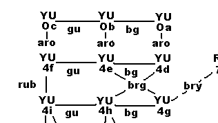
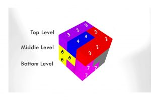

Soma cube is a 3*3*3 cube made with seven Soma blocks. As shown in the following picture, it has six sides and each side has nine small blocks. These small boxes are called unit cubes(2). Soma Cube is made of 27 unit cubes.

You can make the cube by arranging the blocks in different ways. In fact, there are 240 unique ways of building the cube.
Can you make it in all 240 different ways? The Soma Map present these 240 ways.
When rotations, replacement, and mirror images are considered, the Some cube can be made in 1,105,920 ways.
How did you get this number?
Once a Soma cube is built, it can be rotated in 24 different ways. Thus, we can have 240 x 24 = 5270 different combinations built, considering the rotations.
Every Soma cube has a mirror image. So the total number of different combinations is 240 x 24 x 2 = 11520.
Consider the placement of individual Soma Blocks. Soma blocks 1,3,4,5,6 can be placed in 2 different ways and Soma block 3 can be placed in 3 different ways as shown below diagram.

This gives the number 1,105,920 (11,520*2*2*2*2*2*3) ways of building the Soma cube.
Therefore, it is said the Soma cube can be built with 1,105,920 combinations when rotations, symmetrics, and the placement of individual Soma block is taken.
SOMAP created by Conway & Guy presents all 240 combinations of building the Soma cube.
Lets see how to read the Soma Map (SOMAP).
Here, Soma blocks are named in a particular way.


Soma cube has vertices (5), edges (6) and faces (7). Corner Point is another namee for vertice.

Can the same block be the deficient and center block at the same time?
Yes. It is possible. Soma block 5 and 6 can make a center block and deficient block at the same time.
Pay attention to the surface of the cube. Can you see proper big “L”, small “L” or “Z” on the face of the Soma cube? You can rotate the cube to make these visible.
The following figure shows the proper and improper big “L”, small “L” or “Z” with their values.

Proper small L Value 1 -> small L value 1

Incorrect

Proper big L Value 2 -> Big L value 1

Incorrect

Proper Z Value 4 -> Z value 4

Incorrect
Lets see how to read the Soma Map. The Soma Map looks like

A node in the map represent the <Deficient value > < Central value > <Dexterity value > and <order number>. For example, YU0C tells that Soma block Y is DEFICIENT, Soma block U is CENTRAL and dexterity value is 0. As shown here (8) Soma block Y is Soma block 2 and block U is block 5.
Dexterity value 0 tells that small "L", big "L" and "Z" are not visible on the face of the cube.
Take another example. U3b tells that piece 5 is DEFICIENT and CENTRAL at the same time. The Dexterity value is 3. This means Soma block 1 and 2 look like small “L” and big “L”, and piece 4 does not make a proper “Z”.
The solid line and dotted line tells that rearranging the given 2 or 3 Soma blocks can make another Soma cube.
Lets see what it means by an example. As shown below, take the first two nodes and the bridge.
By rearranging Soma blocks 3 (G) and 5 (U), it is possible to make a new Soma cube. In the newly created Soma cube, Soma block 2 (Y) is deficient (does not make a vertex) and Soma block 5 (U) makes the central of the cube. None of Soma blocks makes proper small “L”, big “L” and “Z”.
Lets take another example. As shown below, consider the first two nodes and the bridge.
By rearranging Soma blocks 3 (A), 6 (R) and 4 (O), a new Soma cube is made. In the newly created Soma cube, the deficinet block is Y (Soma block 2) and the central block is U (Soma block 5) and only "Z" is visible.
If you can’t find the one you built in the Soma map, take the reflection of built one. Then, you can find the corresponding match in the Soma Map. Soma Map (SOMAP) presents all 240 combinations. Download the SOMAP and record books to make your progress in taking 240 challenge.
Number grid is recording instrument. It can be used to record your progress in making Soma cubes and other shapes.
For Soma cubes, each Number Grid is a 3*3 matrix corresponding to 9 unit cubes in each layer. Hence, for every Soma Cube there are 3 Number Grids.

Top Level
| 3 | 3 | 3 |
| 4 | 4 | 2 |
| 2 | 2 | 2 |
Middle Level
| 6 | * | * |
| 6 | * | * |
| 7 | 1 | 1 |
* Invisible
Bottom Level
| 6 | * | * |
| 7 | * | * |
| 7 | 7 | 1 |
One is free to label the cube in a completely different way. However, the same labeling method should be followed thereafter.
In this site the Number Grids is read from left to right.
The following diagram illusterates a mirror image.
Rotating the Soma Cube around X, Y, Z axis does NOT make a unique formation.However, it gives different number grids. One Soma cube formation could be rotated 24 different ways on X, Y, and Z axises.
Any two formations could be checked for uniqueness by following a simple test. Place the Soma Cubes to be compared on a flat surface. Note down the block formations of one Soma Cube on any of its 6 sides. Find if the same block formation is to be seen in the other. If so proceed to compare other surfaces of the first Soma Cube in the similar manner. If all surfaces are identical, the two Soma Cube formations are identical. Hence the original positions of the two Soma Cubes are said to be a “rotated” version of one unique formation.
Therefore, it is important that you ALWAYS CHECK each formation for its uniqueness. While formations look “Different” they are not “ Unique”. Put your builds under this test and you will know for sure!
There are many designs that could be made with one Soma Set. These include architectural shapes, interior designs, and decorative items. Further shapes can be built with multiple Soma Sets.
With special thanks to Stevica Kronic from Maribor in Slovenia two PDF e-books with many possible Soma shapes with and without notations could be found here.


Spatial intelligence is one of the three cognitive abilities. The other two are verbal and quantitative intelligence. (Scientific America)
The Soma Cube is a very powerful spatial intelligence development tool.
Some selected articles on the following are presented here.
Spatial ability, defined by a capacity for mentally generating, rotating, and transforming visual images, is one of the three specific cognitive abilities most important for developing expertise in learning and work settings. Two of these, quantitative and verbal ability, are quite familiar ..
...spatial ability, also known as spatial visualization, plays a critical role in engineering and scientific disciplines.
The participants with relatively strong spatial abilities tended to gravitate towards, and excel in, scientific and technical fields such as the physical sciences, engineering, mathematics, and computer science.

For decades, spatial ability assessed during adolescence has surfaced as a salient psychological attribute among those adolescents who subsequently go on to achieve advanced educa- tional credentials and occupations in STEM. Results solidify the generalization that spatial ability plays a critical role in developing expertise in STEM..and suggest, among other things, that including spatial ability in modern talent searches...
There is good evidence that [spatial ability] relates to specializedachievements in fields such as architecture, dentistry, engineering, andmedicine . . .
...data visualization is an emerging, important discipline, and spatial thinking—geography—is a fundamental skill for good data visualization.
When talking about data visualization many begin with the assumption that it’s a new thing, freshly formed in this big data era. Visualization is not new, and it’s much older than the “Napoleon’s March” example cited by Edward Tufte as the best information graphic. For centuries, people have measured and mapped out worldly phenomena. We were collecting and mapping information long before the printing press.

The purpose of this article is to study characteristics of Soma Cube in combinatorial-geometric point of view, and to present basic substances and direction for efficient Soma cube activities in school mathematics upon systematical analysis of methods of finding solutions using Inclusion-Exclusion Method.
We can apply Inclusion-Exclusion Method to find all possible solutions in Soma Cube activities not as trial-and-error method but as analytical method. Because Inclusion-Exclusion Method can reduce the number of problem-solving variables by making high conjunction in the choice of pieces. Soma cube pieces can be sorted as 'flat' ones and 'non-flat' ones, which would be another effective method in the manipulation of Soma Cube pieces.

It provides the learners with diverse learning activities in spatial perception, mental rotation and visualization.
The curriculum has been implemented at school and tertiary levels. Our teaching experience supports the conclusion that the proposed curriculum can provide improvement in performing spatial tasks.
Soma puzzles are assembled from parts, each consisting of identical block elements joined at the sides. This set of parts is highly suitable for assembling by a mechanical arm and allows students a wide spectrum of problem solving activities. A Soma puzzle assignment in the course is to assemble a given setup from Soma parts by the robot.

The seven “Soma pieces” are produced as irregular combinations of 27 identical cubes, and may be joined to form a “Soma cube”. The position of each Soma piece is expressed mathematically, and all possible positions are studied by computer programming along with geometrical considerations. It is found that the Soma cube may be constructed in 480 non-congruent ways: that excludes solutions which may be generated by rotations of the whole Soma cube. The solutions may be divided into 240 symmetrical pairs.
The seven Soma pieces may in fact be arranged into one cube in many ways, "the exact number of such [essentially different] solutions has not yet been determined". In the present work we give the solution to this problem, which was solved with the aid of a computer program, combined... This is an excellent example of the computerization of a mathematical problem

Many combinatorial riddles may be translated into integer programming problems. Here the well-known puzzle of the Soma cube is formulated as a set partitioning problem in two different ways. This leads to fast algorithms for the enumeration of all solutions.
A first enumeration of all solutions was obtained by hand in 1961 by John Horton Conway and M.J.T. Guy "one wet afternoon" when both mathematicians had no more pressing chores at the University of Cambridge.
The study examined secondary school students' ability to interpret various representations of simple three-dimensional objects. Verbal descriptions, descriptions based on coordinates, graphical representations, and actual prototypes were employed. The two-dimensional graphical representations were plans, elevations, and perspective drawings.

Few realize that the Soma? puzzle can be used in counting and construction activities with the average student. It can be equally valuable when used to provide enrichment and higher- level activities for the acceler ated student. While manipulating the cubes, students make ...

“My 7th grade math students are inquisitive, motivated, and tactile learners when they are each able to manipulate items at their own desks. “
“My students need wooden cubes to manipulate and explore spatial visualization skills and to finally glue them together to form geometric shapes. “
“With these blocks and with the unit on spatial visualization, my students understand and have a fascination with geometry and different views of a structure. This truly opens the door and gets them excited about learning more in depth in the areas of engineering, architecture, building and other types of artistry. “
Read More

“The Soma cube is a three-dimensional puzzle constructed using seven different three-dimensional puzzle pieces. Despite the heavy mathematics foundation of the Soma cube, the puzzle has been utilized in a wide variety of spaces such as entertainment, psychological research studies, and both elementary and secondary classrooms. This article outlines specific classroom applications in elementary, middle, and high school. Research supporting the classroom activities and specific Common Core State Standards addressed by those applications are included.”

“Through communication and teamwork, students can work on a series of large-scale SOMA challenges that they choose. An excellent communication exercise is to ask a student to choose a model, make it with the small SOMA, and then give blind instructions to the group to replicate it on the large scale. This will lead them to understand the value of clear communication, nomenclature, and geometric description. Students will realize the importance of naming each piece and using precise language for describing intended rotations. “


How to make a Soma Cube from Sonobe Cubes